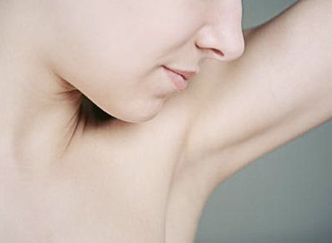
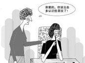
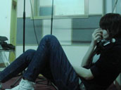

张小姐(27岁)
发病史：6 年
恢复阶段：术后7天
淤血消失，切口皮肤生长期
什么是腋臭？
- 腋臭又称为狐臭 臭汗症等 是由患者腋窝等部位的大汗腺分泌旺盛，且汗液中的脂肪酸比普通人高 呈淡黄色 较浓稠；脂肪酸达到一定浓度 腋臭患者毛发也较为旺盛，汗液经皮肤表面的细菌 主要是葡萄球菌的分解 产生不饱和脂肪酸而发出臭味 腋臭是属于皮肤附属器官的疾病，属于皮肤外科的范畴。 点击更多的了解
- 
腋臭与哪些因素有关
-
与遗传基因有关
大多数狐臭患者有家族遗传史，有统计显示，有明显遗传倾向的约占60%以上。
-
与精神压力有关
精神或神经系统受损时（如偏执狂、精神分裂等）也可产生臭汗症。
-
与生活环境有关

受内分泌的影响，青春期开始显现，味道较重，老年后逐渐较弱。
腋臭对人有哪些危害
-
99%的人工作、学业生活带来严重影响
-
90%的人因为狐臭感到自卑
-
85%的人会有社交恐惧症
 -

40%的人患上长期忧郁症
-
15%的人因为狐臭曾想到自杀
专家指出，腋臭严重者还伴有稀耳垢，长期会腐蚀耳膜，引发耳鸣，导致耳聋。还有部分伴有口臭，脚臭，还可导致遗传延续。因此，有腋臭的患者最好进行彻底治疗，快乐的生活。
咨询电话:021-6519-1999
我要咨询在线专家
腋臭手术前注意事项
腋臭手术后注意事项
- 术后2周内双臂不可抬高于肩膀之上，严格避免上臂外展动作，避免剧烈运动，过量排汗。因为这些都可能会发生伤口血肿及部分皮肤坏死，伤口愈合不良等并发症。
- 术后根据医嘱进行换药等物理治疗。
- 如若术后有肿胀，伤口血肿现象，或有任何问题及时联系医生或到院门急诊处理。
- 采用传统手术切除腋臭者，术后1-2周内要限制上臂运动，如提重物，举高，打球，抱孩子等，以确保伤口复原顺利。
- 采行腋下汗腺抽吸法的患者术后5-7天，要开始适度活动上肢，利于复原。
- 手术前后1周禁烟禁酒，促进伤口愈合，组织恢复。
咨询电话:021-6519-1999
我要咨询在线专家
案例分享
医院简介
精品项目推荐
患者对我们的评价